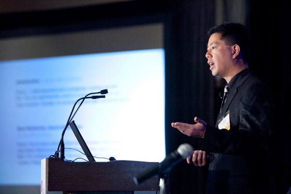

I Encontro de Informática do
Instituto Federal de Rondônia
De 03 a 05 Novembro de 2014
Integração, pesquisa, extensão e novas tendências de mercado. Tudo em um só lugar.
{kind=link}
Sobre o evento
Com objetivo de se tornar um evento oficial dos IFets de Rondônia, o Encontro de Informática vem com a intenção de promover e fomentar a pesquisa e extensão, além de possibilitar networking entre discentes e mestres fazendo-se conhecer novas tendências de mercado e projetos sendo desenvolvidos em cada campus. A realização deste projeto depende exclusivamente da integração de todos os professores e alunos, pois toda atividade a ser posta em prática é de iniciativa de cada um. Apesar deste ser um evento voltado para o público do Ensino Médio, serão convidados para também participarem conosco pesquisadores de outras áreas além da informática, acadêmicos e professores universitários, profissionais de TI e representantes da indústria.
Palestras, Mini-cursos e Mesas Redondas
Nosso encontro contará com diversas atividades acadêmicas que abordarão assuntos variados dentro da informática. As palestras, de caráter informativo, virão para mostrar o que há de novo mercado e melhores práticas daquilo que já estamos acostumados a fazer. Mini-cursos nos ajudarão a compreender melhor a teoria através da prática. E as mesas redondas tratarão de colocar lado a lado especialistas das diversas áreas de conhecimento para discutir assuntos polêmicos dentro da tecnologia que com certeza vão lhe interessar. No momento da inscrição procure aquelas que você mais se identifica. Portanto seja rápido, pois as vagas nos mini-cursos serão limitadas!
Se você deseja colaborar conosco ministrando qualquer atividade, por favor, preencha este formulário até dia 01 de Outubro de 2014. Entraremos em contato posteriormente para confirmar sua participação e montar nossa grade de programação.

Exposição de Trabalhos e Publicações
Para aqueles que estão na pesquisa ou extensão, abriremos chamadas para que você e sua equipe possam fazer publicações dos trabalhos que vem sendo desenvolvidos. Para isto, basta se registrar na atividade "Exposição de Trabalhos Científicos" durante sua inscrição no evento. Para submeter seu artigo basta entrar na página inicial de nosso sistema de eventos onde você verá o módulo de submissão pronto para receber seu arquivo.
Ao enviar, uma equipe de avaliadores fará leitura de seu trabalho lhe retornando assim que possível, sugestões de alterações necessárias para que seu artigo se enquadre em nossos padrões, tanto de formatação quanto de qualidade. Uma vez aprovado, a publicação oficial do seu trabalho estará vinculada à exposição de um banner e apresentação a avaliadores no local.
Mesmo havendo facilidade em contruibuir com a comunidade acadêmica através deste evento, serão aceitos apenas os 30 melhores trabalhos enviados. Muita atenção aos requisitos e datas para não perder a oportunidade de mostrar seu trabalho para todos os campi e comunidade!
Datas importantes
| 01/09/2014 | Início das submissões de artigos pelo sistema |
| 16/09/2014 | Fim das submissões |
| 29/09/2014 | Publicação da lista de artigos aceitos e envio de modificações a serem realizadas |
| 06/10/2014 | Último dia para envio das correções solicitadas pelos avaliadores |
| 20/10/2014 | Publicação final da lista de artigos aprovados |
Competições e outras recreações
E como este é um evento voltado para estudantes do Ensino Médio Integrado, com faixa etária iniciando dos 13 anos, a equipe organizadora decidiu movimentar não apenas a massa cinzenta, mas também o resto do corpo. Por isso deixaremos a parte "chata" para o dia e promoveremos atividades noturnas como festas e competições entre os discentes de todos os campus.
Motivação
Todo evento em que levávamos nossos alunos era focado num público adulto, a linguagem era mais massante (para um adolescente de 15 anos) e todo o ambiente emanava dedicação, responsabilidade, profissionalismo. Não que estas coisas não sejam importantes, elas as são e precisamos ensiná-las sabiamente, mas vamos combinar que isto não chega nem perto de ser atrativo para um público como o nosso. Então vamos deixar as coisas mais interessantes para eles.
Clique sobre as competições para saber mais sobre cada uma.
Inscrições
As inscrições deve ser realizadas através deste link e são gratuitas. Encorajamos todos os estudantes de Computação a participar, pois os dias de 03 a 05 de Novembro com certeza serão históricos no IFRO, quando se unirão por força acadêmica, para crescimento conjunto do saber e da ciência, cada Campus deste Instituto Federal de Rondônia. E você, vai ficar de fora desse momento memorável?
O que você está esperando? Faça agora mesmo sua inscrição!
Competição de Cosplay
A cultura japonesa é extremamente forte na vida de qualquer adolescente moderno no nosso país. Apesar de o Cosplay não ser uma prática frequente neste Estado, os mangás e animes têm ocupado boa parte do tempo deles durante a semana. Portanto, nada mais justo que produzir uma festa "à fantasia" com caracterização dos personagens que mais marcaram suas vidas e com quem acabam se identificando e passam a amar por toda a vida.
A escolha dos personagens é liberado, segundo o gosto de cada um. Não precisa vir caracterizado necessariamente de produção japonesa. Sinta-se livre para usar Cartoons, videogames, cantores, atores ou qualquer outro ícone pop.
Contudo a competição será decida dentro de parâmetros bem definidos:
- A avaliação será conduzida individualmente
- Fantasia - quanto mais próximo do original, maior a pontuação, pode ser feita à mão ou adquirida;
- Performance - durante avaliação o comportamento deve o mais próximo possível do personagem real (com frases de efeito, gestos, entre outros)
Não se enganem, uma equipe de juízes experientes no assunto participarão da banca de avaliação e eles são extremamente rigorosos com a verossimilhança, então planejem bastante antes de entrar no palco.

I Encontro de Informática do Instituto Federal de Rondônia
Grade de Programação
03/11 - 1 Dia
| Início | Fim | Atividades | Descrição |
|---|---|---|---|
| 08:00 | 09:30 | Credenciamento | Confirmação de inscrições |
| Entrega de pastas e crachás | |||
| 09:30 | 10:30 | Abertura - Palestra: "Novas tecnologias, novos desafios" | Palestra motivacional e informativa sobre as novas tendências tecnológicas e os novos desafios no atual mercado de trabalho. Ao final, apresentação da equipe organizadora e de apoio, além de reiterar toda a programação do evento e logística. |
| 10:30 | 12:00 | Apresentação de Projetos e resultados de Pesquisa e Extensão | Cada Instituto terá a oportunidade de mostrar para os outros campi o que vem desenvolvendo, os resultados de suas ações junto à comunidade, projetos em andamento e aqueles que ainda virão. Os Institutos devem eleger um representante que fará toda a apresentação, podendo este elaborá-la livremente utilizando quaisquer tecnologias. |
| 12:00 | 13:30 | Almoço | Com folga de 30 minutos para o início das atividades. |
| 14:00 | 18:30 | Mini-cursos e Palestras | Aguardando contato com ministrantes. Divulgação detalhada no dia 03/10 |
| 18:30 | 19:30 | Jantar | Com folga de 30 minutos de preparação psicológica para a festa |
| 20:00 | 22:00 | Festa | Banda ao vivo (a confirmar) |
| Música à vontade | |||
| Competição de Jogos |
04/11 - 2 Dia
| Início | Fim | Atividades | Descrição |
|---|---|---|---|
| 07:00 | 08:00 | Café da manhã | |
| 08:00 | 12:00 | Mini-cursos e Palestras | Aguardando contato com ministrantes. Divulgação detalhada no dia 03/10 |
| 12:00 | 13:30 | Almoço | Com folga de 30 minutos para o início das atividades. |
| 14:00 | 18:00 | Mini-cursos e Mesas redondadas | Aguardando contato com ministrantes. Divulgação detalhada no dia 03/10 |
| 18:30 | 19:30 | Jantar | |
| 19:30 | 22:00 | Festa | Música à vontade |
| Competição de Cosplay | |||
| Competição de Jogos - Finais |
05/11 - 3 Dia
| Início | Fim | Atividades | Descrição |
|---|---|---|---|
| 07:00 | 08:00 | Café da manhã | |
| 08:00 | 12:00 | Mini-cursos e Palestras | Aguardando contato com ministrantes. Divulgação detalhada no dia 03/10 |
| 12:00 | 13:30 | Almoço | Com folga de 30 minutos para o início das atividades. |
| 14:00 | 15:00 | Exposição de trabalhos/banners | |
| 15:00 | 18:00 | Teste da Ordem Jedi | |
| Mesas redondas e Palestras | |||
| 18:30 | 19:30 | Jantar | |
| 20:00 | 21:00 | Desfile Garota INFO | |
| Encerramento |